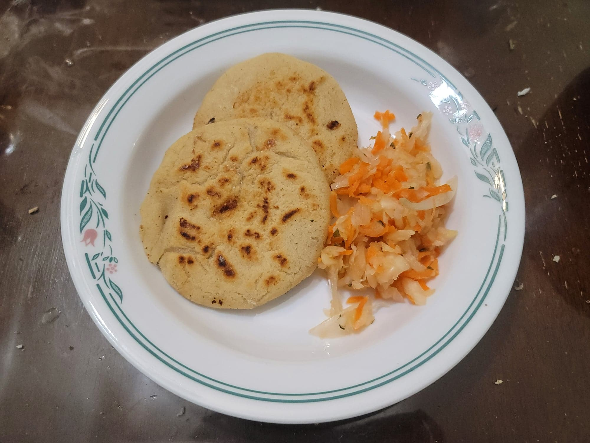

Pupusas

Ingredients:
Pupusas:
- 4 cups (495 g) Masa harina
- 3 cups Water
- 2 tsp Fine salt
Fillings:
Other Ingredients:
Instructions:
- In a large mixing bowl, combine the masa harina and salt. Then add in the water knead together until the dough comes together and becomes a pasty, clay-like texture.
- Place some water and oil into a bowl. Use this to occasionally lubricate your hands as you fill the pupusas.
- Take a golf ball-sized portion of dough and roll into a ball. Then dimple the ball with your fingers and stuff with any filling of your choice. Then seal the dough over the filling. Flatten into an even round and then repeat with the rest of the dough. If a pupusa cracks, cover the crack with some more of the dough and a little oil.
- Heat the oil in a large pan over medium heat. Place pupusas in batches onto the pan and cook for 2-5 minutes on each side, or until golden brown. Repeat with the rest of the pupusas.
- Serve immediately with a side of curtido.